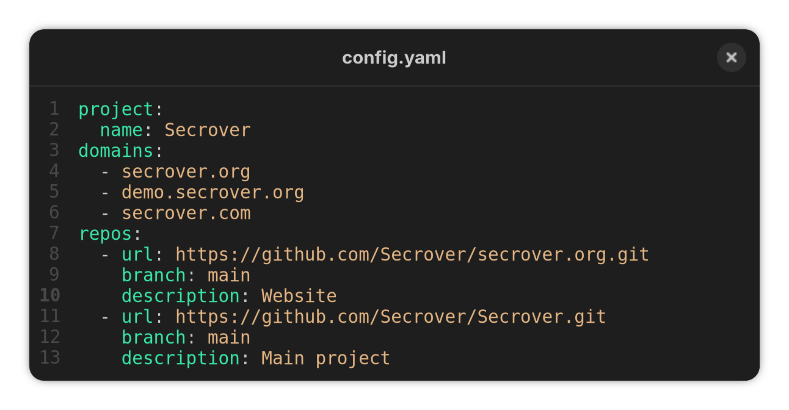
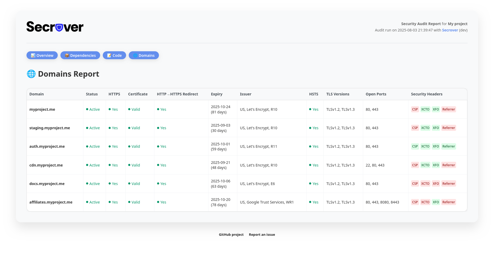

View on GitHub
View on GitHub


One config file, zero complexity
Get started fast with a single YAML config where you define your repositories and domains — that’s it.
Set up in a single command
No installation hassle — just run one simple Docker command and Secrover will start scanning your projects.

Sharable reports your clients will trust
Secrover generates polished, professional reports you can hand directly to clients, teams, or stakeholders. Every report is backed by an open-source, transparent auditing engine — no black boxes, no surprises.